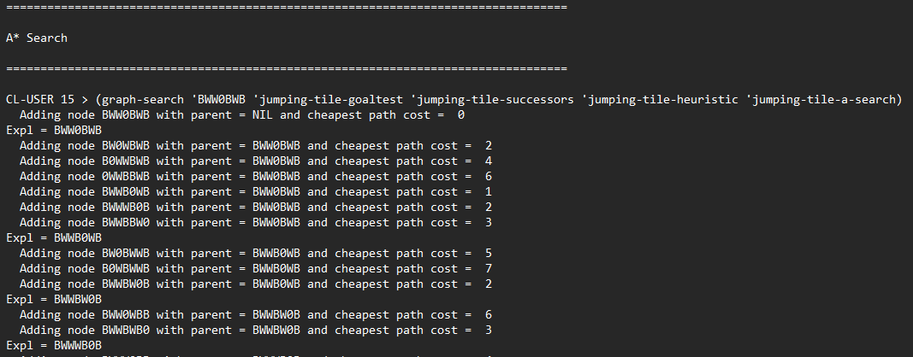
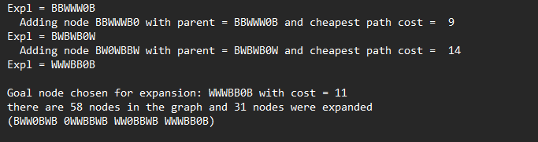
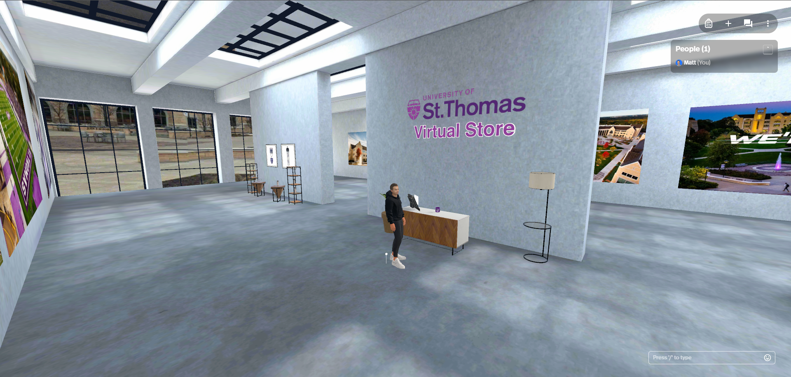

For a class project I wrote a Java program to compute the solution to a “Futoshiki” puzzle.
The user would select a puzzle from a set of given puzzles, and then decide whether to have the puzzle solved using either a sequential or fork/join method. The program would then return the solved puzzle and the time it took to solve it. More details on how Futoshiki puzzles work can be found at futoshiki.com
For a class project I wrote a text based program to compute a solution to the “Jumping Tile” game in LISP.
The Jumping Tile game consists of three black tiles, three white tiles, and a blank space all arranged in a straight line. The goal of the game is to orient the tiles in the least amount of moves so all white tiles are to the left and all black tiles are on the right, regardless of the position of the blank space.
The program solved by searching the problem space using various graph searching algorithms such as A*, Uniform Cost, Greedy Best First, Depth First, and Breadth First Search. The problem space was computed by generating successors for the current problem state. The next problem state to consider was determined by the graph search algorithm specified. Searching algorithms that required a heuristic to estimate distance to the goal state did so by counting the white tiles on the left of the board.
I designed a mock virtual reality merchandise store as part of a metaverse conference presented to the Board for Governors at the Opus College of Business. The environment is hosted on Spatial.io, and I populated it with freely available 3D models from SketchFab, and a variety of St. Thomas media to decorate. The skybox for the store is 360 image of taken from the center of the lower quad.
